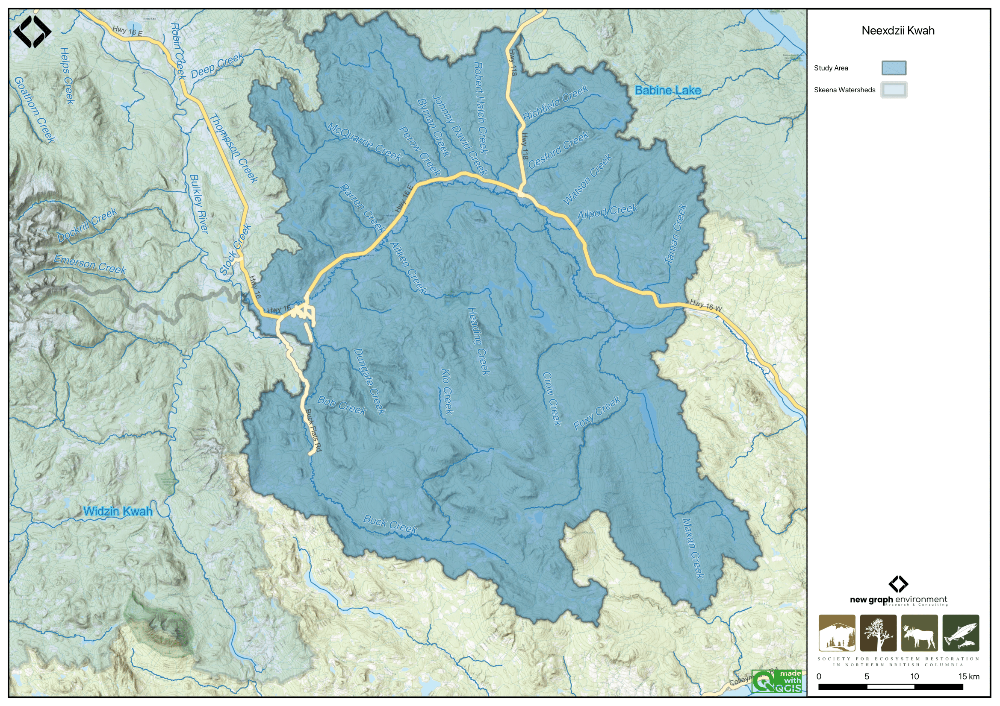
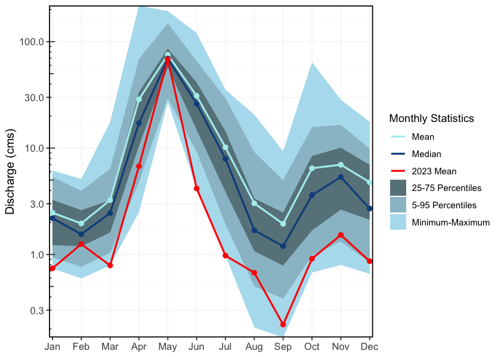
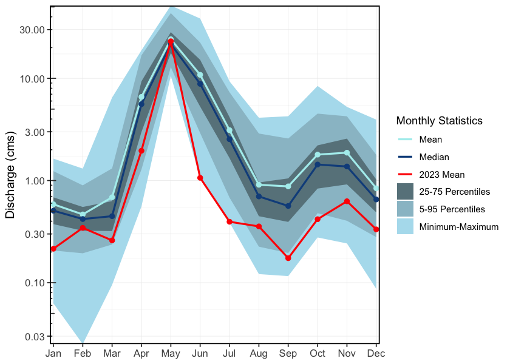
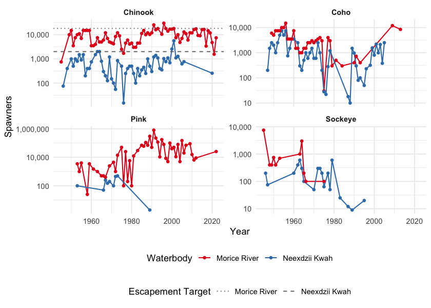
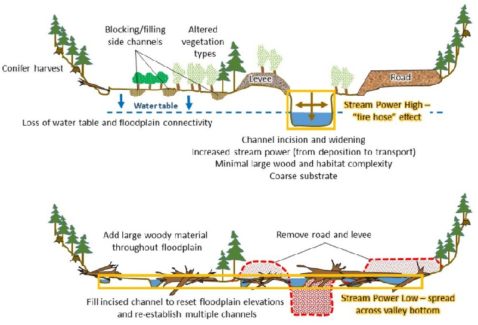
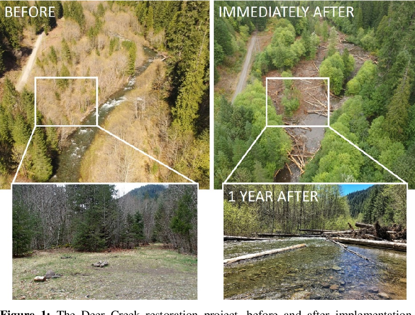
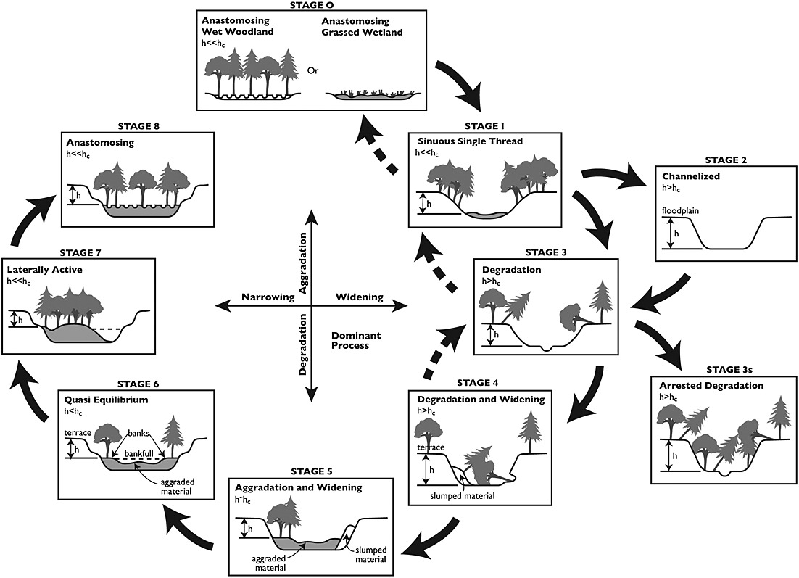
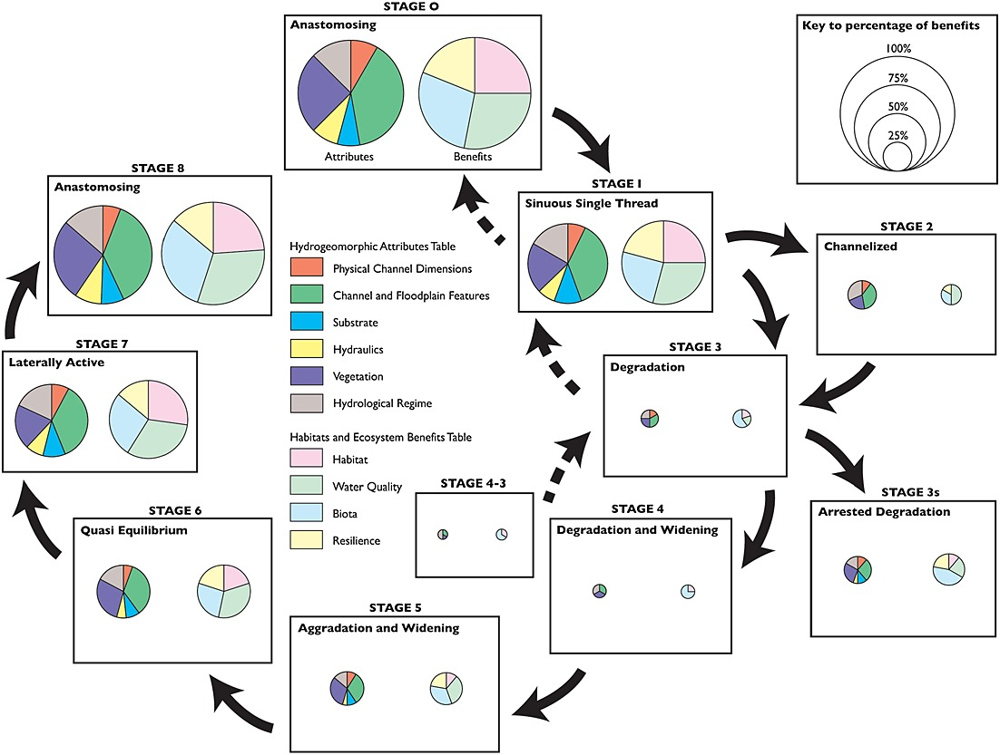
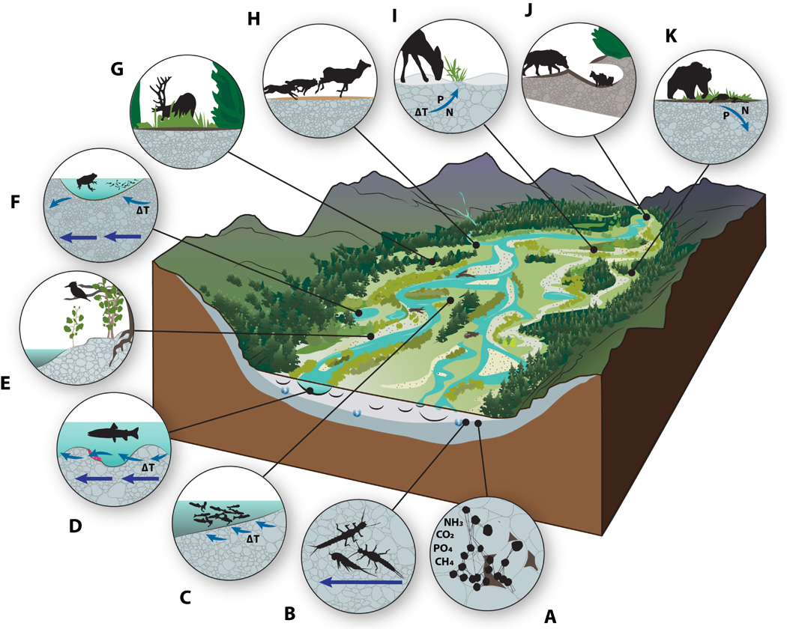

2 Background
2.1 Project Location
The study area primarily focuses on the Neexdzii Kwah (Upper Bulkley River), which is located upstream of the confluence of the Widzin Kwah (Morice River) and the Neexdzii Kwah rivers (Figure 2.1). Although this area is the initial focus of activities, the overall area for project activities can include anywhere within the boundaries of the Widzin Kwah Water Sustainability Project. The boundaries of the Widzin Kwah Water Sustainability Project include not only the Neexdzii Kwah but also the entire drainage area of Widzin Kwah (Morice River) as well as the small portion of the Bulkley River downstream of the Morice River confluence to just north of Dockrill Creek (“Widzin Kwah Water Sustainability Project,” n.d.).

Figure 2.1: Overview map of Neexdzii Kwah Study Area
2.1.1 Neexdzii Kwah (Upper Bulkley River)
fwapgr::fwa_watershed_at_measure(360873822, 164920) %>% mutate(area_km2 = round(area_ha/100, 1)) %>% pull(area_km2)The Neexdzii Kwah (Upper Bulkley River) is an 8th order stream that drains an area of 2320km2 in a generally northerly direction from Bulkley Lake on the Nechako Plateau to its confluence with the Widzin Kwah (Morice River) near Houston (“Widzin Kwah Water Sustainability Project,” n.d.). It has a mean annual discharge of 18.5 m3/s at station 08EE003 located near Houston. The hydrograph peaks around May - June during the spring freshet with additional peaks related to significant rain events (Figure 2.2). Highway 16 and the CN Railroad parallel the upper Bulkley River and pass through the towns of Topley and Houston.
hydat_stations <- fpr::fpr_db_query(query = lfpr_dbq_clip('whse_environmental_monitoring.envcan_hydrometric_stn_sp',
'whse_basemapping.fwa_watershed_groups_poly', 'watershed_group_code', c("BULK", "MORR")))
hydat_stations_active <- hydat_stations %>%
dplyr::filter(station_operating_status == "ACTIVE-REALTIME")plot <- fasstr::plot_longterm_monthly_stats(
station_number = "08EE003",
ignore_missing = TRUE,
add_year = 2023
)
print(plot$`Long-term_Monthly_Statistics`)
Figure 2.2: Neexdzii Kwah near Houston (Station #08EE003 - Lat 54.39938 Lon -126.71941).
2.1.2 Buck Creek
fwapgr::fwa_watershed_at_measure(360886221) %>% mutate(area_km2 = round(area_ha/100, 1)) %>% pull(area_km2)Buck Creek is a 5th order stream which enters Neexdzii Kwah just upstream of the Wedzin Kwa / Neexdzii Kwah (Morice/Bulkley) confluence adjacent to Houston. The watershed drains an area of 567km2. Buck Creek is one of the main tributaries to the Neexdzii Kwah and has a mean annual discharge of 4.4 m3/s at station 08EE013 located near the Houston Medical Centre approximately 1 km upstream of the mouth (Westcott 2022a). Flows from Buck Creek account for just under 1/3 of the total flows in Neexdzii Kwah. The hydrograph for Buck Creek shows a similar pattern to Neexdzii Kwah with peak flows in May - June (Figure 2.3).
plot <- fasstr::plot_longterm_monthly_stats(station_number = "08EE013",
ignore_missing = TRUE,
add_year = 2023)
print(plot$`Long-term_Monthly_Statistics`)
Figure 2.3: Buck Creek at the confluence with the Neexdzii Kwah (Station #08EE013 - Lat 54.39608 Lon -126.65024).
# McQuarrie Creek is a 5th order stream that flows into the Upper Bulkley River \~20 km upstream of Houston, and drains an area of `r fwapgr::fwa_watershed_at_measure(360875378) %>% mutate(area_km2 = round(area_ha/100, 1)) %>% pull(area_km2)` km^2^. There is one hydrometric station on McQuarrie Creek deployed by the BC Ministry of Forests, Land, Natural Resource Operations and Rural Development Groundwater Program (FLNRORD) which was was active from 2016-2018 but has very few data [@westcott2022UpperBulkley]. An estimate of mean annual discharge for the two years of available data is `r round(fasstr::calc_longterm_mean(mq_clean),1)` m^3^/s at station 08EE0002 located near the mouth of the creek. Based of the limited data, the hydrograph for McQuarrie Creek during this time period peaks rapidly in May and again in the winter (Figures \@ref(fig:hydrograph3)).
### McQuarrie Creek
#McQuarrie Creek, station number 08EE0002, but station not part of hydat database
mq <- read.csv("data/hydrometric/DataSetExport-Discharge.Logger@08EE0002-20240308164919.csv")
mq_clean <- mq %>%
janitor::row_to_names(2) %>%
janitor::clean_names() %>%
select(-event_timestamp_utc_08_00)%>%
rename(Value = value_m_3_s) %>%
mutate(Value = as.numeric(Value)) %>%
mutate(timestamp_utc_08_00 = lubridate::ymd_hms(timestamp_utc_08_00)) %>%
mutate(Date = lubridate::date(timestamp_utc_08_00)) %>%
mutate(time = format(timestamp_utc_08_00, "%H:%M:%S"))
start_year <- mq_clean$Date %>% min() %>% lubridate::year()
end_year <- mq_clean$Date %>% max() %>% lubridate::year()#Manually creating hydrograph for McQuarrie Creek, station 08EE0002, because station not part of hydat database.
flow <- mq_clean %>%
dplyr::mutate(day_of_year = yday(Date)) %>%
dplyr::group_by(day_of_year) %>%
dplyr::summarise(daily_ave = mean(Value, na.rm=TRUE),
daily_sd = sd(Value, na.rm = TRUE),
max = max(Value, na.rm = TRUE),
min = min(Value, na.rm = TRUE)) %>%
dplyr::mutate(Date = as.Date(day_of_year))
plot <- ggplot2::ggplot()+
ggplot2::geom_ribbon(data = flow, aes(x = Date, ymax = max,
ymin = min),
alpha = 0.3, linetype = 1)+
ggplot2::scale_x_date(date_labels = "%b", date_breaks = "2 month") +
ggplot2::labs(x = NULL, y = expression(paste("Mean Daily Discharge (", m^3, "/s)", sep="")))+
ggdark::dark_theme_bw() +
ggplot2::geom_line(data = flow, aes(x = Date, y = daily_ave),
linetype = 1, linewidth = 0.7) +
ggplot2::scale_colour_manual(values = c("grey10", "red"))
plot
ggplot2::ggsave(plot = plot, file=paste0("fig/hydrograph_", "08EE0002", ".png"),
h=3.4, w=5.11, units="in", dpi=300)### Widzin Kwah (Morice River)
# The Widzin Kwah (Morice River) watershed drains `r fwapgr::fwa_watershed_at_measure(360885316) %>% mutate(area_km2 = round(area_ha/100, 1)) %>% pull(area_km2)` km^2^ of Coast Mountains and Interior Plateau in a generally south-eastern direction. The Morice River is an 8th order stream that flows approximatley 80km from Widzin Bin (Morice Lake) to the confluence with the upper Bulkley River just north of Houston. Major tributaries include the Nanika River, the Atna River, Gosnell Creek and the Thautil River. There area numerous large lakes situated on the south side of the watershed including Morice Lake, McBride Lake, Stepp Lake, Nanika Lake, Kid Price Lake, Owen Lake and others. There is one active hydrometric station on the mainstem of the Morice River near the outlet of Morice Lake and one historic station that was located at the mouth of the river near Houston that gathered data in 1971 only [@canada2010NationalWater]. An estimate of mean annual discharge for the one year of data available for the Morice near it's confluence with the Bulkley River is `r round(fasstr::calc_longterm_mean(station_number = "08ED003")$LTMAD,1)` m^3^/s. Mean annual discharge is estimated at `r round(fasstr::calc_longterm_mean(station_number = "08ED002")$LTMAD,1)` m^3^/s at station 08ED002 located near the outlet of Morice Lake. Flow patterns are typical of high elevation watersheds influenced by coastal weather patterns which receive large amounts of winter precipitation as snow in the winter and large precipitation events in the fall. This leads to peak levels of discharge during snowmelt, typically from May to July with isolated high flows related to rain and rain on snow events common in the fall (Figures \@ref(fig:hydrograph4) - \@ref(fig:hydrology-stats4)).
#
# ```{r, eval=TRUE}
# lfpr_create_hydrograph("08ED002")2.1.3 Climate Anomalies
To provide regional climate context, we used a custom fork of the BC Climate Anomaly App to generate precipitation, mean temperature, and soil moisture anomaly plots for the study area (BC Government 2024). This version of the app - located here allows for custom spatial inputs, enabling localized summaries served through the app locally.
Anomalies are calculated relative to 1981–2010 climate normals using ERA5-Land reanalysis data, regridded to ~30 km spatial resolution (@ Muñoz Sabater 2019). Trend direction and significance are assessed using the Mann-Kendall test and Theil-Sen slope estimator over the 1951–present period (BC Government 2024).
See Appendix - Climate Anomaly Data for plots.
2.2 Skeena Knowledge Trust
The Skeena Knowledge Trust (SKT) serves as a centralized repository for data and information related to salmon and salmon habitat within the Skeena River watershed. To support informed decision-making, SKT provides access to a wide range of reports, datasets, and spatial information through its online platform. Data including reports, datasets, and spatial layers relevant to salmon conservation and habitat management in the region are accessible through the SKT data portal.
2.3 Water Quality
Water quality in the Neexdzi Kwah watershed has been the focus of multiple key studies, including among others - Nijman (1996), Remington and Donas (2000), Oliver (2020) and Westcott (2022b). The background information and resulting recommendations contained within these reports are critical for informing watershed recovery actions, as water quality has the potential to be a limiting factor for fish and fish food. This detailed documentation can also be leveraged to serve as a baseline dataset in which to compare current and future conditions. The reader is encouraged to source information directly from the aforementioned reports as the following summary has been simplified greatly.
The technical report by Nijman (1996) assessed the water quality of the Bulkley River headwaters, focusing on the impacts of the Equity mine, using available data on waste discharges, water quality, streamflows, and water use. It also identified water uses requiring protection and recommended provisional water quality objectives for the headwaters and downstream sections.
Remington and Donas (2000) put together the analysis of a significant amount of technical data related water, sediment and periphyton samples collected from November 1997 to March 2000 by the Habitat Restoration and Salmonid Enhancement Program (Fisheries and Oceans Canada) and others. Nutrients monitored included total phosphorus (TP), soluble orthophosphorus (SRP), ammonia, nitrate, organic nitrogen and total dissolved nitrogen. Periphytic algae was measured at nine sites September 1999 by Remington Enviromnental. Substrate composition and interstitial dissolved oxygen measurement was also conducted at three sites in the upper Bulkley River mainstem as well as one site within Maxan Creek. Reporting from the project noted that the Neexdzi Kwah watershed has easily erodible glacial-fluvial and glacial-lacustrine soils and unusually high soluble phosphorus concentrations compared to other Skeena watershed streams, making it particularly vulnerable to eutrophication from nitrogen loading linked to septic, agriculture and livestock. They recommended a long-term, cost-effective ecosystem health monitoring strategy, incorporating water quality, periphyton, and benthic invertebrate bioassessment. Monitoring nutrients and algae was highlighted as a key approach to track changes over time, assess restoration success, and identify long-term trends within the upper Bulkley River mainstem and major tributaries to better target remedial actions.
2.4 Fisheries
2.4.1 Neexdzii Kwah
Traditionally, the salmon stocks passing through and spawning in the greater Bulkley River were the principal food source for the Gitxsan and Wet’suwet’en people living there (Wilson and Rabnett 2007). Anadromous lamprey passing through and spawning in the upper Neexdzii Kwah were traditionally also an important food source for the Wet’suwet’en (Gottesfeld and Rabnett (2007); pers comm. Mike Ridsdale, Environmental Assessment Coordinator, Office of the Wet’suwet’en). Gottesfeld and Rabnett (2007) report sourceing information from Department of Fisheries and Oceans (1991) that principal spawning areas for chinook in the Neexdzii Kwah include the mainstem above and below Buck and McQuarrie Creeks, between Cesford and Watson Creeks, and the reaches upstream and downstream of Bulkley Falls.
Renowned as a world class recreational steelhead and coho fishery, the greater Bulkley River downstream of Neexdzii Kwah receives some of the heaviest angling pressure in the province. In response to longstanding angler concerns with respect to overcrowding, quality of experience and conflict amongst anglers, an Angling Management Plan was drafted for the river following the initiation of the Skeena Quality Waters Strategy process in 2006 and an extensive multi-year consultation process. The plan introduces a number of regulatory measures with the intent to provide Canadian resident anglers with quality steelhead fishing opportunities. Regulatory measures introduced with the Angling Management Plan include prohibited angling for non-guided non-resident aliens on Saturdays and Sundays, Sept 1 - Oct 31 within the Bulkley River, angling prohibited for non-guided non-resident aliens on Saturdays and Sundays, all year within the Suskwa River and angling prohibited for non-guided non-resident aliens Sept 1 - Oct 31 in the Telkwa River. The Neexdzii Kwah is considered Class II water and there is no fshing permitted upstream of the Morice/Bulkley River Confluence (FLNRO 2013a, 2013b; FLNRORD 2019).
2.4.1.1 Barriers to Fish Passage
Two major natural barriers shape salmon distribution within the Neexdzii Kwah: Bulkley Falls on the mainstem and a series of falls on Buck Creek.
Bulkley Falls is a 12–15m bedrock cascade approximately 11.3 km downstream of Bulkley Lake and upstream of Ailport Creek. Dyson (1949) and Stokes (1956) report substantial use of habitat above the falls by chinook, coho, sockeye, and steelhead prior to 1950, and both concluded that the falls pose a partial obstruction dependent on flow — chinook migrating during high summer flows can ascend, while coho and steelhead could only pass in high-water years. Gottesfeld and Rabnett (2007) report the falls are almost completely impassable during low flows, and Wilson and Rabnett (2007) reported that coho have not been observed beyond the falls since 1972. Provincial fish inventory records show only limited chinook (3 records, 1974–1999) and coho (3 records, 1975–1999) observations upstream of the falls, with no sockeye recorded (MoE 2024). A detailed field assessment is presented in Irvine (2021).
Buck Falls is a series of four drops over approximately 200 m on the Buck Creek mainstem, located 46.7 km upstream of the Buck Creek–Bulkley River confluence. The falls were assessed in September 2024 and are documented in detail in Irvine and Schick (2025). Despite their barrier status (individual drops up to approximately 4 m), the falls are not recorded in the provincial FISS obstacles database and are listed at only 1.5 m in the BC Freshwater Atlas — a significant underestimate.
Historic Wet’suwet’en fishing sites document salmon use that predates modern monitoring — including sites above both falls. Above Bulkley Falls, Nehl’ dzee tez diee at the Bulkley Lake outlet was a fishing site for sockeye, coho, and chinook, and Tsaslachque at the Maxan Creek–Foxy Creek confluence was used for sockeye, coho, chinook, and trout. Above Buck Falls, Neelhdzii Teezdlii Ceek at the Goosly Lake outlet was a fishing site for coho, chinook, kokanee, and rainbow trout — approximately 24 km above the falls (Gottesfeld and Rabnett 2007). Kenny Rabnett (pers. comm.) has suggested that Buck Falls may have been historically passable under certain flow conditions. This traditional knowledge, combined with sparse modern fish inventory records, suggests these barriers were historically passable more frequently than current conditions allow. The near-absence of recent salmon observations above these falls reflects cumulative effects of habitat degradation, overharvest, and changing hydrological conditions rather than permanent natural isolation — and underscores the depth of loss experienced by Wet’suwet’en families and communities whose fishing sites once sustained them. Tables of traditional fishing sites as detailed in Gottesfeld and Rabnett (2007) and Wilson and Rabnett (2007) have been extracted and are stored here.
# @wilson_rabnett2007FishPassage are detailed in Table \@ref(tab:tab-hist-sites).
# amazingly tabulizer is now not working with the new version of R. We use tabulapdf now! (see Price 2014 extraction)
# Extract historical fishing sites
path <- "/Users/airvine/zotero/storage/8SUN8SYA/wilson_rabnett_2007_fish_passage_assessment_of_highway_16_and_cn_rail_in_the_bulkley_watershed.pdf"
##define the area to extract table from for first page
#you would run with this the first time
tab_trim <- tabulizer::locate_areas(path, 64)
##since we have done this before though - numbers below are results
# top left bottom right
# 70.98383 84.16353 407.17779 521.81754
tab_trim <- list(c(70.98383, 84.16353, 407.17779, 521.81754 ))
names_cols <- c('Site Location', 'Tradional Site Name', 'Fish Species')
##extract the tables useing the areas you defined
table_raw <- tabulapdf::extract_tables(path,
pages = seq(64,64),
method = "lattice",
area = tab_trim) %>%
pluck(1) %>%
as_tibble() %>%
# funky column names so we slice the first row and set them as names
slice(2:nrow(.)) %>%
dplyr::select(1:3) %>%
purrr::set_names(names_cols) ##should do this as input from "pages" part of the function
# burn out to csv for safe keeping
table_raw %>%
readr::write_csv('data/inputs_extracted/trad_fish_sites_wilsonrabnett2007FishPassage.csv')
path <- "/Users/airvine/zotero/storage/IQ89I7BK/gottesfeld_rabnett_2007_skeena_fish_populations_and_their_habitat.pdf"
#you would run with this the first time
tab_trim <- tabulapdf::locate_areas(path, 384)
tab_trim <- list(c(75.12685, 87.24851, 409.12454, 521.12677))
names_cols <- c('Site Location', 'Tradional Site Name', 'Fish Species')
##extract the tables useing the areas you defined
table_raw <- tabulapdf::extract_tables(path,
pages = seq(384,384),
method = "lattice",
area = tab_trim) %>%
pluck(1) %>%
as_tibble() %>%
# funky column names so we slice the first row and set them as names
slice(2:nrow(.)) %>%
dplyr::select(1:3) %>%
purrr::set_names(names_cols) ##should do this as input from "pages" part of the function
# burn out to csv for safe keeping
table_raw %>%
readr::write_csv('data/inputs_extracted/trad_fish_sites_gottesfeld_rabnett2007FishPassage.csv')readr::read_csv('data/trad_fish_sites_gottesfeld_rabnett2007FishPassage.csv') %>%
# dplyr::filter(stringr::str_detect(`Site Location`, "Buck|Maxan|McQuarrie|Bulkley Lake|Hwy.16")) %>%
arrange(`Tradional Site Name`) %>%
fpr::fpr_kable(caption_text = "Traditional fishing sites in the Neexdzii Kwah. Adapted from Gottesfeld and Rabnett 2007.",
scroll = FALSE)2.4.1.2 Population Status
Chinook salmon in the Wedzin Kwa are managed within three Conservation Units (CUs): Large Lakes / Morice (CU 49), Upper Bulkley / Neexdzii Kwa (CU 51), and Middle Skeena Mainstem Tributaries (CU 48). Only CU 51 falls entirely within Wet’suwet’en territory; the other CUs include chinook from Bear, Babine, Kispiox, and Kitwanga watersheds, meaning DFO management decisions at the CU scale do not necessarily reflect the status or needs of Wedzin Kwa populations specifically (Winther et al. 2024; Price et al. 2026). The upper Wedzin Kwa / Morice system has historically represented approximately 30% of total Skeena chinook production, with the Morice accounting for roughly 65.9% of the Large Lakes CU (Gottesfeld and Rabnett 2007; Winther et al. 2024).
Application of Wild Salmon Policy assessment metrics to the upper Wedzin Kwa chinook population rates 90-100% of indicators as Threatened or Endangered (Winther et al. 2024). Historical optimum escapement targets established from BC 16 Reports were 18,175 chinook spawners for the upper Wedzin Kwa / Morice system and 2,000 for the Neexdzii Kwa specifically (Peacock et al. 1996); neither target has been consistently met (Figure 2.4). Substantial data gaps persist — the lower Wedzin Kwa has been largely unmonitored for over 30 years, and Neexdzii Kwa monitoring is sparse.
Other anadromous species show similar or worse trajectories. Coho were historically the most widely distributed salmon in the Neexdzii Kwah, with escapements averaging approximately 2,850 annually in the 1950s and 1960s, but declined at an estimated 11% per year through the 1990s; approximately 74% of current Bulkley River coho production originates from hatchery supplementation at Toboggan Creek (Gottesfeld and Rabnett 2007). Sockeye that formerly spawned in Maxan Creek and likely Bulkley and Maxan Lakes collapsed after 1978 and are considered at high risk of extirpation (Gottesfeld and Rabnett 2007). Pink salmon have only scattered spawning records within the Neexdzii Kwah — primarily in Buck Creek and the mainstem below Bulkley Falls (Gottesfeld and Rabnett 2007; MoE 2024) — though their presence has increased since barrier removal at Hagwilget Canyon in 1959 enabled colonization of upper Wedzin Kwa spawning reaches (Price et al. 2026). Steelhead, anadromous lamprey, and other species present in the watershed are relevant to restoration planning but lack systematic population monitoring.
dfo_sad <- readr::read_csv('data/inputs_raw/All Areas NuSEDS.csv',
show_col_types = FALSE) |>
dplyr::filter(waterbody %in% c("BULKLEY RIVER - UPPER", "MORICE RIVER")) |>
dplyr::mutate(
spawners = dplyr::coalesce(natural_adult_spawners, total_return_to_river),
waterbody_label = dplyr::case_when(
waterbody == "BULKLEY RIVER - UPPER" ~ "Neexdzii Kwah",
waterbody == "MORICE RIVER" ~ "Morice River"
)
) |>
dplyr::filter(!is.na(spawners))
# Chinook escapement targets (apply to Chinook facet only)
targets <- tibble::tibble(
species = c("Chinook", "Chinook"),
waterbody_label = c("Neexdzii Kwah", "Morice River"),
target = c(2000, 18175)
)
ggplot2::ggplot(dfo_sad, ggplot2::aes(x = analysis_yr, y = spawners,
colour = waterbody_label)) +
ggplot2::geom_line(linewidth = 0.6) +
ggplot2::geom_point(size = 1.2) +
ggplot2::geom_hline(
data = targets,
ggplot2::aes(yintercept = target, linetype = waterbody_label),
colour = "grey40", linewidth = 0.5
) +
ggplot2::scale_y_log10(labels = scales::label_comma()) +
ggplot2::facet_wrap(~ species, ncol = 2, scales = "free_y") +
ggplot2::scale_colour_brewer(palette = "Set1") +
ggplot2::scale_linetype_manual(values = c("Neexdzii Kwah" = "dashed",
"Morice River" = "dotted")) +
ggplot2::labs(x = "Year", y = "Spawners", colour = "Waterbody",
linetype = "Escapement Target") +
ggplot2::theme_minimal(base_size = 11) +
ggplot2::theme(
legend.position = "bottom",
legend.box = "vertical",
strip.text = ggplot2::element_text(face = "bold")
)
Figure 2.4: Salmon escapement estimates for the Neexdzii Kwah (Upper Bulkley River) and Morice River from DFO NuSEDS (log scale). Values show natural adult spawners where available and total return to river for earlier records. Dashed and dotted lines in the Chinook panel indicate historical optimum escapement targets from BC 16 Reports (Peacock et al. 1996). Data accessed via the NuSEDS New Salmon Escapement Database System.
2.4.1.3 Exploitation and Recovery
Combined ocean and in-river harvest rates for Wedzin Kwa chinook have averaged 56.4% since 1985, ranging from 38% to 76%, with Southeast Alaskan fisheries taking an estimated 22.4% and Canadian fisheries 24.5% annually (Winther et al. 2024; LGL Ltd. 2025). The maximum sustainable harvest rate (UMSY) under current ocean productivity is estimated at 41%, down from 54% under historical conditions; harvest has exceeded this level in 85% of years since 2008 (Winther et al. 2024). The Skeena commercial fishery harvests chinook from multiple populations simultaneously as they migrate upstream; because harvest targets are set based on aggregate abundance rather than individual populations, declines in smaller stocks such as the Neexdzii Kwa can be masked by relatively stronger returns from other watersheds (Winther et al. 2024).
Mean male chinook fork length at the Tyee Test Fishery has declined from approximately 689 mm (1984-1993) to 600 mm (2011-2020), reducing per-capita egg deposition and meaning that historical escapement targets underestimate the number of spawners now needed for equivalent reproductive output (Winther et al. 2024). Forward projections using an age-structured model indicate that at recent exploitation rates (~51%), recovery to sustainable population levels is effectively impossible within 50 years; even at 10% exploitation, recovery would require more than 20 years under historical productivity assumptions (Price et al. 2026).
2.4.1.4 Hatchery Legacy
Hatchery enhancement of Neexdzii Kwa chinook operated from 1985 to 2023 via the Toboggan Creek facility, collecting approximately 100,000 eggs per year from 15–32 females (Peacock et al. 1996; Price et al. 2026). In 1983–1984, juveniles from Upper Wedzin Kwa-origin eggs were released into the Neexdzii Kwa, introducing genetics from a population that was not historically mixed with the local stock. Hatchery-origin fish averaged 38% of Neexdzii Kwa spawners across 14 years with data, ranging from 20% to 55% (Price et al. 2026) — a proportion shown to significantly reduce wild population performance in chinook, coho, and steelhead across the Pacific Northwest (Chilcote et al. 2011), with measurable fitness decline after a single generation of hatchery rearing (Araki et al. 2008) that is passed to offspring (Christie et al. 2014). From 2010 until the programme ended, annual reporting to DFO lapsed, eliminating 13 years of documentation on broodstock composition and fish health. The genetic and demographic effects of 40 years of hatchery operation on an already-depleted wild population have not been assessed (Naish et al. 2007).
2.4.1.5 Implications for Restoration
With harvest management operating at the Skeena scale and largely outside watershed-level control, freshwater habitat restoration is one of the few interventions available to support population recovery at the watershed scale. Improving spawning and rearing habitat quality, reconnecting side channels, and restoring riparian function directly address the freshwater survival bottleneck that compounds the effects of ocean and harvest-driven mortality. The remainder of this report focuses on identifying, prioritizing, and monitoring these habitat restoration opportunities within the Neexdzii Kwah.
A summary of fish species recorded in the greater Bulkley River watershed group is provided in Appendix - Fish Species (Table 5.5).
2.5 Historic Restoration Context
Understanding how we arrived at our current ecological and cultural state is essential for guiding present-day restoration and future sustainability efforts. This section provides high-level summaries of selected foundational references that document impacts to ecosystems and communities, as well as associated restoration initiatives. These works do not represent an exhaustive review but offer critical perspectives and historical context.
Witsuwit’en relationships to the land and waters of the Neexdzii Kwah are documented through oral histories, place-based knowledge, and language in Morin (2016), providing essential context for understanding long-term stewardship and the impacts of colonial policies on Witsuwit’en lands and governance. Systematic assessments of watershed degradation began in the late 1990s when Mitchell (1997) assessed 68 tributaries of the Bulkley River between Bulkley Lake and Boulder Creek, prioritizing streams by severity of impacts from transportation corridors, agriculture, grazing, and municipal land use. Tributaries ranked as highly or severely degraded included Buck Creek, Maxan Creek, Watson Creek, Airport Creek, Cesford Creek, Richfield Creek, Byman Creek, and McQuarrie Creek. MacKay et al. (1998) followed with detailed fish habitat, riparian, and channel assessments that produced numerous site-specific restoration prescriptions across the Neexdzii Kwah — many of which remain unimplemented. Price (2014) documented human-induced modifications to floodplain habitat, river channelization, and areas of upwelling groundwater with potential importance to salmonids along the upper Bulkley mainstem.
Building on this foundation, Gaboury and Smith (2016) developed aquatic restoration designs for 16 high-priority sites in Wet’suwet’en territory between 2015 and 2019, focusing on large woody debris and rock groin structures at eroding meanders, riffle construction in channelized sections, and fish bypass channels. Construction at several sites is documented in Smith and Gaboury (2016) and Smith and Gaboury (2017). The Skeena Sustainability Assessment Forum — a collaborative initiative under the Environmental Stewardship Initiative bringing together 10 Skeena Nations and the Province of British Columbia — completed a State of the Value Report for Fish and Fish Habitat summarizing conditions across the study area using data available up to 2018, with analysis at the assessment watershed level considering environmental indicators related to land use, watershed features, and salmon presence (Environmental Stewardship Initiative 2019; Skeena Sustainability Assessment Forum 2021; Government of British Columbia 2023).
2.6 Restoration Philosophy
2.6.1 Process-based Restoration
Process-based restoration is a relatively new approach to river restoration and is based on the understanding that river form and function is driven by the physical, chemical, and biological processes that take place within them (Beechie et al. 2010). Together, these processes shape rivers and flood planes, which is known as a riverscape (Shahverdian et al. 2019). The goal of process-based restoration is to restore these processes to their the natural rates and magnitudes (essentially stage 0), which leads to the system restoring itself through biological processes and requires minimal corrective intervention Polvi and Wohl (2013). This approach is in contrast to traditional river restoration, which focuses on restoring uniform and static form to the river, such as the channel shape, and is often done through hard engineering and has high costs (Beechie et al. 2010). Principles of process-based restoration adapted from Beechie et al. (2010) are included in Table 2.1.
restoration_principles_pb %>%
fpr::fpr_kable(caption_text = restoration_principles_pb_caption, scroll = FALSE)| Principle | Description |
|---|---|
| Target root causes of habitat and ecosystem change | Aim at the main factors causing ecosystem decline. Identify and try to reverse the impact of human activities on natural processes. |
| Tailor restoration actions to local potential | Each section of a river or stream has its own set of natural features due to its geographic location and climate. Design restoration efforts to align with these inherent characteristics. |
| Match the scale of restoration to the scale of the problem | The restoration effort should correspond to the extent of the issue. Localized problems, such as removal of vegetation by a riverbank, need targeted solutions. However, broader impacts like floodplain alteration due to railways, highways, and intensive farming, require numerous actions across the area. Restoring habitats for species that traverse large areas needs planning that covers their entire living range. |
| Be explicit about expected outcomes | Restoring natural areas is a slow process, and it may take time to see the results. Natural ecosystems are always changing, and a single project might not lead to immediate, noticeable improvements. Setting clear, measurable goals is crucial for understanding the impact of restoration efforts. |
Below is an example of process-based restoration using stage 0 methodology done at Deer Creek in Oregon, USA. In this project they filled in incised channels and added large wood to to the river to restore the natural floodplain elevation and re-establish multiple channels (Figure 2.5)(Meyer 2018). Although this project used relatively aggressive restoration techniques, they observed immediate improvements and the benefits were self-sustaining (Figure 2.6)(Meyer 2018).

Figure 2.5: An example of process-based restoration using stage 0 methodology to restored the natural floodplain elevation. In this project they filled in incised channels and added large wood to restore the natural floodplain elevation and re-establish multiple channels (Meyer, 2018).

Figure 2.6: Before and after restoration took place at Deer Creek, USA. They observed imediate improvements to the habitat and the benefits were self-sustaining (Meyer, 2018).
Process-based restoration also includes many low-cost and low-tech restoration techniques. Resources are sourced from near-by areas, and the restoration is often done by hand, which makes it more accessible to a broad audience and can be done on a smaller scale (Shahverdian et al. 2019). The primary goal of low-tech restoration is to improve the health of as many riverscapes possible by “letting the system do the work” (Shahverdian et al. 2019).
Low-cost process-based restoration could be an applicable in the Upper Bulkely riverscape. Some examples of low-cost restoration techniques include:
- Grazing management
- Riparian planting
- Post-assisted log structures (PALS)
- Beaver damn analogs (BDAs)
Further examples of low-cost process-based restoration are available here.
2.6.2 Stage 0
The Stream Evolution Model (SEM) is used to understanding how the morphology of channels (such as rivers or streams) respond to disturbances like changes in base level, channelization, or alterations in flow and sediment regimes (Figure 2.7)(Cluer and Thorne 2014). An important features of the SEM is the inclusion of stage 0, which represents the state of the river before disturbances and is categorized as either an anastomosing wet woodland or an anastomosing grassed wetland (Figure 2.7)(Cluer and Thorne 2014).

Figure 2.7: Cluer and Thorne’s (2014) stream evolution model which introduced stage 0, a stage that represents the state of the river before disturbances.
The SEM also assigns a hydrogeomorphic attributes and habitat and ecosystem benefits score to each stage (Figure 2.8). Stage 0 is the ultimate restoration goal, but the SEM suggests that there is a big difference in performance between disconnected and incised streams (stages 3-6) and connected streams (stages 7-1), and that stages 7-1 are the best targets for restoration because they have the highest ecosystem potential (Figure 2.8)(Cluer and Thorne 2014).

Figure 2.8: Habitat and ecosystem benifits as well as hydrogeomorphic attributes associated with each stage of the SEM, suggesting that stages 7-1 have the highest ecosystem potential (Cluer and Thorne, 2014).

Figure 2.9: Examples of how a stage 0 stream can benifit the entire riverscape and play an important role in the biophysical interactions between organisms (Hauer et al., 2016).